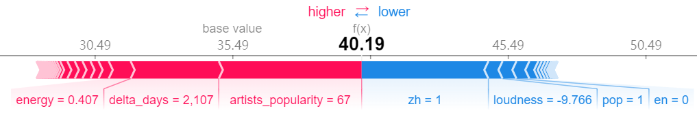
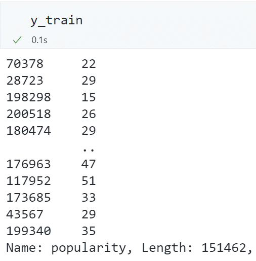

基于 XGBoost 的音乐流行度预测与推荐¶
本文基于音乐平台 Spotify 中的 30 万余条音乐数据与 10 万余条歌手数据，分析并构造了音乐流派、音乐语言等特征，与歌手热度、音乐发行时间等特征共同建模预测音乐流行度，使用 XGBoost 内置的特征重要性计算函数和 SHAP 值评估各特征的重要性及其对预测结果的影响方向与大小，并构建了基于内容余弦相似度的音乐推荐系统。

摘要¶
本文基于音乐平台 Spotify 中的 30 万余条音乐数据与 10 万余条歌手数据，分析并构造了音乐流派、音乐语言等特征，与歌手热度、音乐发行时间等特征共同建模预测音乐流行度，并构建了基于内容余弦相似度的音乐推荐系统。
在预测音乐流行度中，本文选用决策树、随机森林和 XGBoost 三种机器学习方法进行交叉验证，比较其在验证集上的预测表现，发现随机森林和 XGBoost 的拟合优度均较为优秀，验证集的\(R^2\)达\(64\%\)，且 XGBoost 在 GPU 上只需 20 秒的训练耗时更占优。同时，本文使用 XGBoost 内置的特征重要性计算函数和 SHAP 值评估各特征的重要性及其对预测结果的影响方向与大小，并验证了各特征重要性在时间维度上的稳定性。
根据音乐的内容特征，本文构建了基于余弦相似度的音乐推荐系统，并在两首中英文歌曲的推荐测试中取得了良好的效果。
最后本文总结了建模分析的结论，并针对 Spotify 的音乐推荐和版权购买问题提出了建议。
问题描述¶
问题的背景¶
Spotify 是一家拥有超过 4 亿月活用户的音乐流媒体公司。为用户提供音乐服务所赚取的广告费和会员费是它的主要收入来源。每天都有新的音乐上架到 Spotify，若能将最近发行的新音乐和过去发行的老音乐精准推荐给可能喜欢它的用户，可以提高用户的使用体验，进而提高活跃用户数量与用户付费意愿，为公司带来更多的广告与会员服务收入。
在音乐流媒体领域，影响各大平台留存客户的主要因素本质上可以归结为使用体验。用户只有听到喜欢的音乐才会继续使用 Spotify。流行度高的音乐不容易被用户切歌，应当被推荐给更多人。当尝试新音乐时，用户也更期待能听到符合自己口味的音乐。因此，本文围绕如下三个问题进行建模分析：
- 如何基于已有的音乐流行度数据，预测最近新发行的音乐的流行度？
- 哪些特征可能影响音乐流行度？
- 如何基于用户的音乐喜好，将与其喜好最相似的其他音乐推荐给用户？
问题的价值¶
若能回答上述三个问题，可以分别带来以下价值：
-
将未来一段时间很可能会流行的音乐精准推荐给用户，可以让有流行潜力的新歌被更多用户听到，同时减少用户因试错导致的使用体验下降。这将提高用户使用 Spotify 的意愿，从而提高 Spotify 的收入。
当新的音乐上架到 Spotify 时，我们可以根据音乐的某些特征预测其在未来一段时间的流行度，从而可以将预测流行度较高的音乐推荐给更多用户。由于大部分用户不会主动搜索自己从来没有听过的音乐，若用户没有收到流行度较高的音乐的推荐，他们可能永远也不会听到这些本该受到欢迎的音乐。同时，用户接受推荐的时间和精力是有限的，若将流行度不高的音乐推荐给用户，可能会占用他们使用 Spotify 的时间，同时降低使用体验。
-
为流行度较高的音乐精准购买版权，可以节约不必要的版权费用。精准创作流行度较高的作品，可以使音乐制作成本最大程度地转换为收入。
若需要为上架到 Spotify 的音乐购买版权，具有某些特征的音乐可能是更受欢迎的，从而可以为其支付更高的版权费用。根据影响音乐流行度的特征，Spotify 的版权团队可以有针对性地为流行度较高的新发行音乐购买版权，这可以避免为低质量音乐支付过高的版权费，从而减少版权费用支出。生产音乐内容的唱片公司可以考虑根据特征重要性制作迎合市场的商业作品，将制作成本尽可能地转换为受市场欢迎的音乐作品。
-
精准推荐符合用户喜好的音乐，可以提高用户使用 Spotify 的意愿，从而提高 Spotify 的收入。
推荐符合用户喜好的音乐可以帮助用户发现自己没有听过的好歌，这种惊喜感能提高用户使用 Spotify 的期待，从而提高用户使用 Spotify 的意愿并提高 Spotify 的收入。
数据处理、特征工程与探索性数据分析¶
数据描述¶
本文使用 Spotify 上自 1921 年至 2020 年共 60 余万条音乐信息与歌手信息数据集，来源于 Kaggle：https://www.kaggle.com/datasets/yamaerenay/spotify-dataset-19212020-600k-tracks
音乐数据中，各字段的描述如下：
| 字段 | 含义 |
|---|---|
track_id |
歌曲唯一 ID |
track_name |
歌曲名称 |
popularity |
歌曲流行度 |
duration_ms |
歌曲的持续时间（以毫秒为单位） |
explicit |
歌曲是否含有暴露内容（如色情、侮辱、暴力等） |
artists |
歌手名称 |
artists_id |
歌手唯一 ID |
release_date |
歌曲发行时间 |
danceability |
舞蹈性描述的是根据音乐元素的组合，包括速度、节奏的稳定性、节拍的强度和整体的规律性，来衡量一首曲目是否适合跳舞。0.0 的值是最不适合跳舞的，1.0 是最适合跳舞的。 |
energy |
能量是一个从 0.0 到 1.0 的度量，代表强度和活动的感知度。一般来说，有能量的曲目给人的感觉是快速、响亮。例如，死亡金属有很高的能量，而巴赫的前奏曲在该量表中得分较低。 |
key |
音轨的估测总调。用标准的音阶符号将整数映射为音高。例如，0=C，1=C♯/D♭，2=D，以此类推。如果没有检测到音调，则数值为 -1。 |
loudness |
轨道的整体响度，单位是分贝（dB）。响度值是整个音轨的平均值，对于比较音轨的相对响度非常有用。 |
mode |
模式表示音轨的调式（大调或小调），即其旋律内容所来自的音阶类型。大调用 1 表示，小调用 0 表示。 |
speechiness |
言语性检测音轨中是否有口语。录音越是完全类似于语音（如脱口秀、说唱、诗歌），属性值就越接近 1.0。 |
acousticness |
衡量音轨是否为声学的信心指数，从 0.0 到 1.0。1.0 表示该曲目为原声的高置信度。 |
instrumentalness |
预测一个音轨是否包含人声。越接近 1.0 该曲目就越有可能不包含人声内容。 |
liveness |
检测录音中是否有听众存在。越接近现场演出数值越大。 |
valence |
0.0 到 1.0，描述了一个音轨所传达的音乐积极性，接近 1 的曲目听起来更积极（如快乐、欢快、兴奋），而接近 0 的曲目听起来更消极（如悲伤、压抑、愤怒）。 |
tempo |
轨道的整体估计速度，单位是每分钟节拍（BPM）。 |
time_signature |
歌曲的拍号。拍号（米）是一种符号约定，用于指定每个小节（或小节）中有多少节拍。拍号范围从 3 到 7，表示“¾”到“7/4”的拍号。 |
歌手数据中，各字段的描述如下：
| 字段 | 含义 |
|---|---|
artists_id |
歌手唯一 ID |
followers |
歌手粉丝数 |
genres |
歌手流派 |
name |
歌手姓名 |
popularity |
歌手流行度 |
为了方便后续的机器学习建模，我们首先进行必要的数据处理和特征工程，并了解各特征的分布情况。
关键的步骤包括：
-
由于音乐数据条数达 60 余万，若将所有数据均进行训练，在本地机器训练耗时非常久，因此选择剔除 1990 年之前发行的歌曲。
-
剔除
speechiness大于 0.66 的数据。根据数据描述，speechiness大于 0.66 的数据是纯语音数据，不是音乐数据。 -
计算 release_date 距离最新的 release_date 有多少天，并将其作为新的一列特征，表示该音乐发行的时间早晚。
- 将音乐数据与歌手数据根据歌手 id 合并。
- 根据歌手所属流派（原始数据为文本列表），选出出现频率最高的 20 个流派，并根据歌手所属流派生成各音乐所属流派的 One-Hot 编码（一首歌可能同时属于多个流派）。
- 根据音乐名称判断音乐所属语言，将出现频率最高的 20 种语言进行 One-Hot 编码，其余小语种则归于同一类。
下面介绍相关的处理代码和处理细节。
剔除不需要的数据¶
本文在一开始使用完整的 60 余万条音乐数据进行回归预测，在本地机器上训练 XGBoost，耗时在 20 分钟以上。考虑到多模型及多参数组合训练的耗时较久，因此我们将舍去 1990 年之前发行的音乐。
speechiness过高的音乐很可能是纯语音数据，并不是常规意义上的音乐，因此考虑将其剔除。
# 将 tracks_df 中的 id 重命名为 id_tracks
tracks_df.rename(columns={"id": "id_tracks"}, inplace=True)
# 将 release_date 转换为 release_year，只保留年份
tracks_df["release_year"] = [int(i.split("-")[0]) for i in tracks_df["release_date"]]
# 由于数据量过大，我们只分析 1990 年以后的数据
tracks_df = tracks_df[tracks_df["release_year"] >= 1990]
# 剔除 speechiness 大于 0.66 的数据。根据数据描述，speechiness 大于 0.66 的数据是纯语音数据，不是音乐数据
tracks_df = tracks_df[tracks_df["speechiness"] < 0.66]
经过以上两步数据筛选后，得到 1991 年至 2021 年共 30 年发行的 252438 条音乐数据。
发行时间距最新发行音乐的天数¶
利用pd.to_datetime()函数和.dt.days属性，获取音乐发行时间距最新发行音乐的天数。
# 将 release_date 转换为日期格式
tracks_df["release_date"] = pd.to_datetime(tracks_df["release_date"], format="%Y-%m-%d")
# 计算 release_date 距离最新的 release_date 有多少天
tracks_df["delta_days"] = tracks_df["release_date"].max() - tracks_df["release_date"]
# 将 delta_days 转换为整数
tracks_df["delta_days"] = tracks_df["delta_days"].dt.days
合并音乐数据和歌手数据¶
合并时注意修改重复的特证名，如将artists_df中的id重命名为id_artists，name重命名为name_artists，popularity重命名为artist_popularity，用于区分tracks_df和artists_df中的id 和 popularity。
artists_df.rename(
columns={
"id": "id_artists",
"name": "name_artists",
"popularity": "artists_popularity",
},
inplace=True,
)
# 将 artists_df 中的 genres 转换为 obj list 类型
artists_df["genres"] = [i[2:-2].split("', '") for i in artists_df["genres"]]
# 将 tracks_df 和 artists_df 合并
df = tracks_df.merge(artists_df, on="id_artists")
根据歌手流派推测音乐流派¶
由于音乐数据中没有现成的流派数据，而只在歌手数据中有流派数据，我们基于“同一歌手创作出来的音乐的流派基本相似”这一假设，可以根据歌手流派推测音乐流派。
歌手流派数据存在于字段genres中，它是一个或多个流派文本的列表。
我们首先统计一共有多少个不同的流派，以及各流派的数量，并绘制数量前 20 名的流派。
# 生成所有 genre 及其出现次数的 dataframe
# 先将所有 genre 放到一个 list 中
genre_list = list(itertools.chain.from_iterable(df["genres"].to_list()))
# 计算每个 genre 出现的次数的 dict
unique, counts = np.unique(genre_list, return_counts=True)
genre_dict = dict(zip(unique, counts))
# 将 genre_dict 转换为 dataframe
genre_df = pd.DataFrame.from_dict(genre_dict, orient="index", columns=["count"])
# 将 genre_df 按照 count 降序排序
genre_df = genre_df.sort_values(by="count", ascending=False)
# 绘制 genre 的数量前 20 名的柱状图
fig, ax = plt.subplots(figsize=(10, 6))
sns.barplot(
ax=ax,
data=genre_df.iloc[1:21],
x=genre_df.iloc[1:21].index,
y="count",
palette="Blues_r",
)
plt.xticks(rotation=45)
# 保存图片
fig.savefig("genre 的数量前 20 名。pdf", format="pdf", facecolor="white", bbox_inches="tight")
plt.show()

由于原始流派的数量较多，如果直接使用 genre 作为特征进行 One-Hot 编码，会导致特征维度过高，而如果舍去某些少见的 genre 流派，则会丧失部分信息。
同时我们可以发现，各流派的名字虽不完全相同，但许多流派之间有共同的关键词，可以认为是同属于一个流派大类。我们可以绘制词云图来展示各流派关键词的出现频率。
# =====绘制词云图=====
def draw_word_cloud(text_path, output_path, outline_image_path=imread(r".\音乐。jpg")):
# 字体路径
font_path = r"C:\Windows\Fonts\simsun.ttc"
# 读取文本
text = open(text_path).read()
# 配置词云图
wc = WordCloud(
font_path=font_path,
background_color="white",
max_words=2000,
mask=outline_image_path,
max_font_size=100,
random_state=42,
width=1000,
height=860,
margin=2,
)
# 生成词云图
wc.generate(text)
plt.figure(dpi=300)
plt.imshow(wc, interpolation="bilinear")
plt.axis("off")
# 保存为本地文件
wc.to_file(output_path)
with open(r"genre.txt", "w") as fp:
fp.write("\n".join(genre_list))
draw_word_cloud(text_path="genre.txt", output_path="genre 流派词云图。png")

经统计，一共有 4267 个不同的流派。若将所有的流派全部进行 One-Hot 编码，得到的特征矩阵将非常稀疏，不利于建模求解与分析。因此我们考虑将相似的流派统一成同一个流派，例如 pop、dance pop 都可以归为 pop 这一个流派大类中。
按照这一思路，我们将流派中出现的关键词进行统计，绘制数量排前 20 名的流派关键词。
# 将 genre_list 的元素拆分为单个元素
word_list = [i.replace("-", " ").split() for i in genre_list]
word_list = list(itertools.chain.from_iterable(word_list))
# 计算每个 word 出现的次数的 dict
unique, counts = np.unique(word_list, return_counts=True)
word_dict = dict(zip(unique, counts))
# 将 word_dict 转换为 dataframe
word_df = pd.DataFrame.from_dict(word_dict, orient="index", columns=["count"])
# 将 word_df 按照 count 降序排序
word_df = word_df.sort_values(by="count", ascending=False)
# 绘制 word 的数量前 20 名的柱状图
fig, ax = plt.subplots(figsize=(10, 6))
sns.barplot(
ax=ax,
data=word_df.iloc[:20],
x=word_df.iloc[:20].index,
y="count",
palette="Blues_r",
)
plt.xticks(rotation=30)
# 保存图片
fig.savefig("word 的数量前 20 名。pdf", format="pdf", facecolor="white", bbox_inches="tight")
plt.show()
可以看到，相比完整的流派名称，流派关键词更集中于pop和rock这两类中，各关键词在文本形式上更加简洁、一般，适合代表一首歌的风格属性。
因此，我们首先选择上述最热门的 20 个流派关键词，再根据“是否包含某个流派关键词”，为每个音乐进行流派的 One-Hot 编码，这样既能尽可能使更多的音乐能获取流派数据，又不至于导致特征维数过高。
top_20_word = word_df.iloc[:20].index.to_list()
# 将 genre 转换为向量，若某首歌的 genre 中包含某个 word，且这个 word 为 word_df 最常出现的前 50 名，则该首歌的该 word 的向量为 1，否则为 0
df["genres_vector"] = df["genres"].apply(
lambda x: [
i
in list(
itertools.chain.from_iterable(list(j.replace("-", " ").split() for j in x))
)
for i in top_20_word
]
)
# 将 genres_vector 转换 0/1 向量，并 expand 为多列
df = df.join(pd.DataFrame(df["genres_vector"].to_list(), columns=top_20_word))
# 转换 0/1 向量
df[top_20_word] = df[top_20_word].astype(int)
# 删除 genres_vector 列
df.drop(columns=["genres_vector"], inplace=True)
根据音乐名称推测音乐所属语言¶
Spotify 上拥有各个语种的音乐，我们认为语言也是影响流行度的重要因素之一，因此考虑将语言作为一个特征。原始音乐数据中没有体现音乐所属语言的字段，我们可以根据音乐名字符串来推测音乐所属语言。
具体地，我们首先利用langid库对原始音乐名字符串进行变换，转换为可能性最高的语言，若该音乐无法判断语言，则返回空值。
# 提取出歌曲的语言
def get_lang(text):
try:
return langid.classify(text)[0]
except:
return "unknown"
tracks_df["lang"] = tracks_df["name"].swifter.apply(get_lang)
以下示例可以看出，langid库对音乐名的语种识别较为准确。
我们统计各语言音乐的数量，可以发现一共有 89 种不同的语言。
绘制数量排前 20 的语言的柱状图，可以发现英文歌曲占绝大多数，西班牙语、德语、中文和法语也是歌曲数量前 5 名。
# 语言的数量前 20 名
lang_dict = df["lang"].value_counts().to_dict()
# 将 lang_dict 转换为 dataframe
lang_df = pd.DataFrame.from_dict(lang_dict, orient="index", columns=["count"])
# 将 lang_df 按照 count 降序排序
lang_df = lang_df.sort_values(by="count", ascending=False)
# 绘制 lang 的数量前 20 名的柱状图
fig, ax = plt.subplots(figsize=(10, 6))
sns.barplot(
ax=ax,
data=lang_df.iloc[:20],
x=lang_df.iloc[:20].index,
y="count",
palette="Blues_r",
)
plt.xticks(rotation=30)
# 保存图片
fig.savefig("lang 的数量前 20 名。pdf", format="pdf", facecolor="white", bbox_inches="tight")
plt.show()

由于语言的数量较多，且大部分语言的数量都很少，因此我们将数量排名大于 20 的归为一类，然后依据某个 track 中是否包含这个语言进行 One-Hot 编码。
# 提取出歌曲数量前 20 的语言
top_20_lang = df["lang"].value_counts().iloc[:20].index.to_list()
# 将 lang 转换为向量，若某首歌的 lang 在 top_20_lang 中，则将该首歌的该 lang 转换 0/1 向量，并 expand 为多列
dummies = pd.get_dummies(df["lang"])
# 只保留 top_20_lang 中的列
dummies = dummies[top_20_lang]
# 将 dummies 与 df 合并
df = pd.concat([df, dummies], axis=1)
数值型变量的分布情况¶
根据原始字段描述，我们一共有 19 个数值型变量。通过绘制数值型变量的分布情况，可以帮助我们直观地认识数据。
# 数值型变量
numerical_variables = [
"popularity",
"duration_ms",
"explicit",
"danceability",
"energy",
"key",
"loudness",
"mode",
"speechiness",
"acousticness",
"instrumentalness",
"liveness",
"valence",
"tempo",
"time_signature",
"release_year",
"delta_days",
"followers",
"artists_popularity",
]
# 对数值型变量，使用 sns.histplot 绘制直方图，并放置到一张 5*4 的大图中
fig, axes = plt.subplots(5, 4, figsize=(20, 20))
for i, variable in enumerate(numerical_variables):
sns.histplot(ax=axes[i // 4, i % 4], data=df, x=df[variable], kde=True)
# 不显示 y 轴标签
axes[i // 4, i % 4].set(ylabel=None)
# 保存图片
fig.savefig("数值型变量的分布情况。pdf", format="pdf", facecolor="white", bbox_inches="tight")
plt.show()

得益于原始数据质量较高，上述数值型变量的分布未出现明显的异常情况。可以发现，音乐的流行度集中在 40 左右，有少数流行度高的音乐能够达到 60 以上。
由于后续建模均使用树模型，其对原始数据的量纲并不敏感，因此我们不继续对这些数值型变量进行标准化等操作。
保存数据¶
上述特征工程的过程耗时较久，尤其是根据音乐名称推测音乐所属语言时，需要调用langid库并进行近 30 万次运算，即使使用了swifter库加速apply()函数，整个过程仍需要 20 分钟以上。为了方便后续建模分析，我们可以将目前得到的特征数据保存到本地pickle文件。
机器学习建模与分析¶
从特征工程后的数据中提取原始音乐特征（如duration_ms、explicit、danceability等）、流派编码、语言编码，共 57 维数据。
划分训练集和验证集¶
按照6：4的比例划分训练集和验证集。在训练集上进行交叉验证，用于训练模型和验证模型，寻找最优超参数。在测试集上检验模型对流行度的预测表现。
# 提取特征和标签
x = df.drop(
[
"id_tracks",
"name",
"popularity",
"artists",
"id_artists",
"name_artists",
"release_date",
"release_year",
"genres",
"lang",
],
axis=1,
)
y = df["popularity"]
# 将数据集分为训练集和测试集
x_train, x_test, y_train, y_test = train_test_split(x, y, test_size=0.4, random_state=0)

对多个机器学习模型进行交叉验证，寻找最优超参数¶
由于特征变量众多，且各特征之间与预测目标流行度之间很可能存在非线性关系，我们使用树模型进行预测，分别是单个决策树、以 Bagging 为集成方法的随机森林和以 Boosting 为集成方法的 XGBoost。
此外，我们也尝试过带有核技巧的 SVM 回归，但其在大量数据集下的训练耗时太久（交叉验证需要 1 小时以上），因此我们舍去了 SVM 模型，只使用三种树模型。
超参数搜索范围¶
设置各模型在交叉验证时的超参数搜索范围如下：
# 决策树的超参数
param_dt = {
"max_depth": randint(1, 10),
"min_samples_split": randint(2, 10),
"min_samples_leaf": randint(1, 10),
}
# 随机森林的超参数
param_rf = {
"n_estimators": randint(10, 1000),
"max_depth": randint(5, 20),
"min_samples_split": randint(2, 10),
"min_samples_leaf": randint(1, 10),
}
# XGBoost 的超参数
param_xgb = {
"eta": uniform(loc=0.001, scale=1),
"gamma": uniform(loc=0.001, scale=1),
"max_depth": randint(2, 11),
"min_child_weight": randint(2, 11),
"n_estimators": randint(100, 1000),
}
由于数据量太大，若对所有训练集数据进行交叉验证，耗时将会过长（三个模型在 15 万条数据上训练一次耗时约 5 分钟，若进行 5 折交叉验证且搜索 10 组超参数，则需要耗时 5 小时左右）。因此，我们在训练集中随机选择 10000 个样本进行交叉验证。待找到最优超参数组合后，再在完整训练集上训练一次。
# 从 x_train 和 y_train 中随机采样 10000 个样本用于超参数搜索
x_train_sample = x_train.sample(n=10000, random_state=0)
y_train_sample = y_train[x_train_sample.index]
随机搜索¶
使用随机搜索实现交叉验证，随即搜索可以避免超参数组合数量过多导致的训练耗时呈指数增长的问题，并且可以指定超参数的分布从而避免人为设定搜索值带来的干扰。
同时，由于音乐数据本身可认为是独立同分布的（各条音乐数据之间没有时序相关性，即它们在数据集中的位置没有影响），我们可以使用ShuffleSplit方法将训练集随机分成 5 折，进一步增加随机性。每组超参数进行 5 次训练和验证的过程。
# 定义字典，用于存储不同模型交叉验证的结果
cv_results = {}
for model in tqdm(["dt", "rf", "xgb"]):
cv_results[model] = {
"Best_Param": None,
"Mean_Validation_R2": None,
"Test_R2": None,
"Best_Model": None,
"Time": None,
}
if model == "dt":
estimator = DecisionTreeRegressor()
param_grid = param_dt
elif model == "rf":
estimator = RandomForestRegressor()
param_grid = param_rf
elif model == "xgb":
estimator = XGBRegressor(eval_metric="rmse")
param_grid = param_xgb
# 定义随机搜索交叉验证的实例
rondom_search = RandomizedSearchCV(
estimator=estimator,
param_distributions=param_grid,
n_iter=10,
cv=ShuffleSplit(n_splits=5, test_size=1 / 5, random_state=0),
scoring="r2",
n_jobs=-1,
verbose=4,
random_state=0,
)
# 计算模型的训练开始时间
start_time = time.time()
# 在训练集上进行随机搜索交叉验证
rondom_search.fit(x_train_sample, y_train_sample)
# 计算模型的训练结束时间
end_time = time.time()
# 记录最佳参数
cv_results[model]["Best_Param"] = rondom_search.best_params_
# 记录最佳参数下的平均验证集 R2
cv_results[model]["Mean_Validation_R2"] = rondom_search.best_score_
# 记录最佳参数下的测试集 R2
cv_results[model]["Test_R2"] = rondom_search.score(x_test, y_test)
# 记录最佳模型
cv_results[model]["Best_Model"] = rondom_search.best_estimator_
# 记录训练时间
cv_results[model]["Time"] = end_time - start_time
交叉验证的结果¶
各模型交叉验证的结果如下。可以看到，单棵决策树模型的预测效果比两个集成学习模型更差。随机森林核 XGBoost 在验证集测试集上的表现较为接近，均为\(55\%\)左右，但训练时间也显著高于决策树。
| 最优超参数组合 | 平均验证集 R2 | 测试集 R2 | 训练时间 | |
|---|---|---|---|---|
| 决策树 | {'max_depth': 8, 'min_samples_leaf': 9, 'min_samples_split': 3} | 0.454742 | 0.451892 | 7.305891 |
| 随机森林 | {'max_depth': 17, 'min_samples_leaf': 2, 'min_samples_split': 8, 'n_estimators': 561} | 0.54548 | 0.555451 | 247.18 |
| XGBoost | {'eta': 0.019, 'gamma': 0.618, 'max_depth': 8, 'min_child_weight': 10, 'n_estimators': 856} | 0.557511 | 0.561045 | 284.7733 |
以上结果只是在随机选择的 10000 个样本上进行训练和测试的结果。我们期待，使用最优超参数组合在完整的训练集上进行预测，效果会有进一步的提升。
使用最优超参数组合进行训练¶
我们利用交叉验证阶段记录下的最优模型，在完整的训练集上进行训练，并在测试集上进行测试，模型评价指标为拟合优度\(R^2\)。
test_results = {}
for model in tqdm(["dt", "rf", "xgb"]):
test_results[model] = {"Test_R2": None, "Time": None}
regressor = cv_results[model]["Best_Model"]
start_time = time.time()
regressor.fit(x_train, y_train)
end_time = time.time()
# 预测
y_pred = regressor.predict(x_test)
# 计算 R2
r2 = metrics.r2_score(y_test, y_pred)
print("{}-R2: {:.2%}".format(model, r2))
test_results[model]["Test_R2"] = r2
test_results[model]["Time"] = end_time - start_time
各模型在测试集上的表现与训练耗时¶
# 绘制各模型在测试集上的 R2
sns.set_style("ticks")
fig, ax1 = plt.subplots(figsize=(10, 6))
ax1.bar(
[i - 0.15 for i in list(range(len(test_results.keys())))],
[test_results[model]["Test_R2"] for model in test_results.keys()],
color="b",
width=0.3,
)
ax1.set_xticklabels(["", "Decision Tree", "", "Random Forest", "", "XGBoost"])
ax1.set_ylabel("R2", color="b")
ax1.tick_params("y", colors="b")
# 绘制各模型的训练时间
ax2 = ax1.twinx()
ax2.bar(
[i + 0.15 for i in list(range(len(test_results.keys())))],
[test_results[model]["Time"] for model in test_results.keys()],
color="r",
width=0.3,
)
ax2.set_ylabel("Time(s)", color="r", rotation=270, labelpad=15)
ax2.tick_params("y", colors="r")
ax1.legend(["R2"], loc="upper left")
ax2.legend(["Time"], loc="upper right")
# 保存图片
fig.savefig("最优参数下的训练效果。pdf", format="pdf", facecolor="white", bbox_inches="tight")
plt.show()
可以看到，由于训练样本量的提升（从 10000 条提高到 151462 条），三个模型在测试集上的表现均有显著提升。其中决策树在测试集上的拟合优度为\(52.1\%\)，仍低于随机森林和 XGBoost 的\(65\%\)。
对比随机森林和 XGBoost，两者在测试集上的表现十分相近且都高于单棵决策树，说明集成学习能够提高模型的预测效果。得益于 XGBoost 能够在 GPU 上进行运算，其训练一轮耗时仅 20 秒，远低于随机森林的 300 秒。因此，我们后续采用 XGBoost 进行进一步的特征重要性分析。
部分样本的预测结果¶
为直观展示 XGBoost 的预测效果，我们选取测试集的前 100 条样本，绘制预测流行度和真是流行度。
fig = plt.figure(figsize=(10, 6))
selection = range(100)
plt.plot(range(len(selection)), y_pred[selection], label="preds")
plt.plot(range(len(selection)), y_test.iloc[selection], label="true")
plt.legend()
# 保存图片
fig.savefig("部分预测结果。pdf", format="pdf", facecolor="white", bbox_inches="tight")
plt.show()
可以看到，大部分流行度的差异都能够被 XGBoost 很好地预测，说明其预测结果较为准确和可靠。
XGBosost 内置的特征重要性¶
XGBoost 是以决策树作为基学习器的集成学习模型，利用训练模型时各特征对信息增益的贡献大小，可以计算各特征的重要性。
我们首先使用 XGBoost 内置的特征重要性属性，绘制各特征重要性的柱状图。
# xgboost 自带的特征重要性属性
# 特征名称
features_name = x_train.columns
# 将特征重要性与对应的特征名称合并成 series
features_importance = pd.Series(model.feature_importances_, index=features_name)
# 将特征重要性降序排列
features_importance = features_importance.sort_values(ascending=False)
plt.figure(figsize=(10, 5))
plt.bar(range(features_importance.shape[0]), features_importance)
plt.xticks(
range(features_importance.shape[0]),
features_importance.index,
rotation=90,
fontsize=14,
)
plt.title("Feature importance", fontsize=14)
# 保存图片
plt.savefig("特征重要性。pdf", format="pdf", facecolor="white", bbox_inches="tight")
plt.show()
可以明显地发现，歌手本身的流行度和音乐发行时间是对模型预测结果影响较大的两个特征。这一点也十分符合我们的直觉：歌手越受欢迎，他们的音乐也更容易流行。发行时间越早，音乐可能已经过时，因而流行度会下降。
其他特征也可一一进行分析。但是，根据特征重要性的大小进行分析容易让人产生困惑的是，我们无法仅通过特征重要性的大小分析出该特征对预测结果的影响方向。例如：对于instrumentalness这个特征，我们不知道音乐的人声属性究竟如何影响音乐的流行度，几乎没有人声的纯乐器音乐会更受欢迎还是更不受欢迎呢？
基于 SHAP 值的特征重要性¶
为了获知各特征对预测结果的影响方向和大小，我们可以计算各特征的 SHAP 值。
SHAP（SHapley Additive exPlanations）是 Lundberg 和 Lee 在 2017 年提出的用于增强机器学习可解释性的方法。1SHAP 利用合作博弈理论的概念分解预测，以衡量每个特征对预测的影响。SHAP 值定义为特征值在所有可能的特征中的平均边际贡献。利用shap库 https://github.com/slundberg/shap，我们可以方便地计算每个样本中各特征对预测结果的影响方向和大小。
构建 SHAP 解释器¶
将上文构建的 XGBoost 模型导入到shap中得到解释器explainer。对每一个训练集中的样本，计算每个特征的 SHAP 值。
explainer = shap.TreeExplainer(model)
shap_values = explainer.shap_values(x_train)
# 查看 shap_values 的维数，它应当和 x_train 的维数相同
print("shap_values 的维数：", shap_values.shape)
print("x_train 的维数：", x_train.shape)
SHAP 值可以理解为：将全体样本标签的均值作为基准，每个特征将基准值提高或减小的数值。基准值加上所有特征的贡献值就得到该样本最终的预测值。
# 查看 y 的基准值，它应当和 y_pred 的平均值相同
y_base = explainer.expected_value
y_pred = model.predict(x_train)
print("y_base:", y_base)
print("y_pred 的均值：", y_pred.mean())
单样本的 SHAP 值及其含义¶
下面以训练集中第 100 个样本为例，查看各特征的 SHAP 值。
j = 100
player_explainer = pd.DataFrame()
player_explainer["feature"] = x_train.columns
player_explainer["feature_value"] = x_train.iloc[j].values
player_explainer["shap_value"] = shap_values[j]
检验基准值加上加上所有特征的 SHAP 值是否等于 y 的预测值：
# y 的基准值加上所有特征的 SHAP 值，应当等于 y 的预测值
print('y_base + sum_of_shap_values: %.2f'%(y_base + player_explainer['shap_value'].sum()))
print('y_pred: %.2f'%(y_pred[j]))
将基准值与各特征的 SHAP 值可视化：
# 将 y 的基准值与各特征的 SHAP 值对 y_pred 的影响可视化
shap.initjs()
shap.force_plot(explainer.expected_value, shap_values[j], x_train.iloc[j])
可以看到，artists_popularity和delta_days将基准值向右推动较多，而zh将基准值向左推动较多。这说明歌手的流行度为 67 对该音乐的流行度有正向影响，发行天数为 2107 天（2015 年发行）也提高了音乐的流行度，而该歌曲为中文歌曲（该歌曲名为“心燒”，歌手为“Eason Chan（陈奕迅）”）则降低了流行度。
各特征在所有训练集样本的 SHAP 值¶
我们进一步查看各特征在所有训练集样本的 SHAP 值，以分析各特征对预测结果的整体影响。
shap.summary_plot(shap_values, x_train, show=False)
plt.savefig("summary_plot.pdf", format="pdf", bbox_inches="tight")
下图绘制了影响较大的前 20 个特征的 SHAP 值，每个点代表每条样本。
-
横轴代表 SHAP 值，纵轴对应每个特征。
-
点的颜色代表该样本的特征本身的值大小，红色代表特征的值较大，蓝色代表特征的值较小。
-
点的横坐标代表该特征的 SHAP 值，即该特征对预测值的影响。横坐标越大于 0，说明该特征对该样本的预测值的影响越正向；横坐标越小于 0，说明该特征对该样本的预测值的影响越负向。
由于特征数量过多，我们不对每个变量进行一一分析与解释，这里展示一些有意思的发现如下：
artists_popularity对音乐流行度存在明显的正向影响，红色样本点基本都分布在右侧，蓝色样本点基本都分布在左侧。下图的单变量 SHAP 值分布也显示了单调性的特点。
shap.dependence_plot(
"artists_popularity", shap_values, x_train, interaction_index=None, show=False
)
plt.savefig("dependence_plot_artists_popularity.pdf", format="pdf", bbox_inches="tight")
delta_days对音乐流行度的影响并不线性。具体来说，发行时间过于久远的音乐（即delta_days值越大，对应红色的点）对流行度大致有略微的负向影响。但对于发行时间离现在非常近的音乐（即delta_days值越小，对应蓝色的点），有的音乐流行度很高，有的则非常低。这说明有一部分新歌非常受欢迎，但有一部分新歌基本无人问津。
-
loudness、instrumentalness、energy、zh对流行度的影响十分单调正向，即响度越大、人声越多（即纯乐器演奏越少）、能量感知程度越低非中文音乐，其流行度越高。非中文音乐更流行可能是因为 Spotify 在中国大陆的使用率并不高，因此中文音乐在 Spotify 上没有其他语种受欢迎。 -
danceability适中到较高，节奏适合跳舞，流行度越高。该值在 0.3 到 0.6 之间时有可能对流行度有较大提升作用。
下图展示了每个特征对标签影响程度的绝对值的均值，其基本与前文使用的 XGBoost 内置的特征重要性结果一致。
shap.summary_plot(shap_values, x_train, plot_type="bar", show=False)
plt.savefig("summary_plot_bar.pdf", format="pdf", bbox_inches="tight")
各特征 SHAP 值随时间的变化情况¶
为了验证各特征对流行度的影响在时间维度上是否稳定，我们可以将 SHAP 值分年度取平均值。下图展示了部分特征在每年的平均 SHAP 值的折线图。
可以看到，几乎所有特征在每年的平均 SHAP 值都很稳定，说明我们挖掘出的特征对流行度的影响程度分析较为稳健。
基于内容的音乐推荐¶
基于已有的音乐特征，我们可以计算用户喜好的某个音乐与其他音乐的余弦相似度，并将相似度最高的若干歌曲推荐给用户。
在计算余弦相似度之前，我们可以筛选与用户喜好音乐的语言相同的音乐，以提高推荐的成功率。
由于曲库中可能存在重名歌曲的情况，因此音乐推荐函数只支持输入音乐的唯一 id。
def recommend(id_tracks, df, x, n=10):
"""
Args:
id_tracks: 歌曲 id
df: 原始数据集
x: 特征数据集
n: 推荐歌曲数，默认为 10
Returns:
recommend_tracks: 推荐歌曲列表
"""
try:
# 提取歌曲的语言
lang = df[df["id_tracks"] == id_tracks]["lang"].values[0]
# 计算歌曲在 x 中的索引
index = df[df["id_tracks"] == id_tracks].index[0]
# 提取歌曲的特征
item = x.loc[index]
# 提取出与输入歌曲语言相同的歌曲
df_lang = df[df["lang"] == lang]
# 提取出与输入歌曲语言相同的歌曲的特征
x_lang = x.reindex(df_lang.index)
# 计算输入歌曲与其他歌曲的相似度
similarity = metrics.pairwise.cosine_similarity(
item.values.reshape(1, -1), x_lang
)
# 提取出与输入歌曲相似度最高的前 n 首歌曲，不包括输入歌曲（输入歌曲的相似度为 1，余弦相似度一定是最大的）
top_n = df_lang.iloc[similarity[0].argsort()[-n - 1 : -1][::-1]]
# 返回推荐的歌曲名称与艺术家名字
recommend_tracks = top_n[["name", "name_artists"]]
return recommend_tracks
except:
print("您输入的歌曲目前不在数据库中，请尝试输入 1990-2021 年发行的歌曲。")
推荐示例¶
我们分别选择一首英文歌和一首中文歌，应用上文构建的音乐推荐函数。
歌曲 id 可以在 Spotify 网页版中的 URL 链接中获得。
英文歌：My Heart Will Go On¶
可以看到，在输入 Céline Dion 演唱的 My Heart Will Go On 的音乐 id 后，我们得到了 10 条新音乐，其中有 2 条就来自于 Céline Dion。值得注意的是，我们的特征中并没有给出歌手名称这样的信息。因此，能够推荐出 Céline Dion 演唱的音乐纯粹是基于其他特征得到的，这说明我们构造的特征确实能帮助找到与用户喜好相似的音乐。
中文歌：安河桥¶
我们选择宋东野的安河桥作为中文示例歌曲。
可以看到，推荐歌曲中同样出现了较多来自宋东野的音乐，这也直接验证了该音乐推荐系统具有一定的效果。
总结与回顾¶
针对前文问题提出建议¶
在上文我们提出了如下三个问题：
- 如何基于已有的音乐流行度数据，预测最近新发行的音乐的流行度？
- 哪些特征可能影响音乐流行度？
- 如何基于用户的音乐喜好，将与其喜好最相似的其他音乐推荐给用户？
在构建机器学习模型、使用特征重要性分析各特征对流行度的影响后，我们给出如下建议：
- 计算最近新发行的音乐的各种特征（如响度、节奏、流派、语种等），并代入到训练好的 XGBoost 模型中，即可得到流行度的预测结果。
- 歌手的流行度、发行时间、响度等特征均能够影响音乐流行度。对于 Spotify 的版权团队来说，购买流行度较高的歌手的作品、响度较大、非纯音乐、舞蹈节奏在 0.4 到 0.6 之间等类型的音乐，较有潜力获得更高的受欢迎程度。对于生产音乐内容的唱片公司来说，也可以根据特征重要性，考虑将内容制作成本投入到此类音乐作品中，以迎合市场需求。
- 基于音乐语言和构造特征的余弦相似度，使用本文构造的音乐推荐系统，给出可能受用户喜欢的音乐。
改进方向¶
回顾本文的数据处理过程、构建的预测音乐流行度的机器学习模型以及音乐推荐系统，我认为可以在当前分析的基础上进一步改进：
- 可以获取更准确的音乐流派信息，而不是基于歌手流派信息进行推测。有的歌手创作风格多变，在不同的音乐作品上可能会有不同的风格。若能够获取更准确的音乐流派西南西，可以不必基于歌手流派信息进行推测。
- 可以获取更准确的音乐语言信息，而不是基于音乐名称进行推测。音乐名称所用的语言和音乐本身（歌词）所用的语言可能不相同，例如朴树的华语歌《New Boy》的歌名虽为英文，但实际上是一首中文歌。
- 在基于内容的推荐基础上，增加基于用户的推荐机制。我们需要获取更多用户对某音乐的喜好程度，从而基于其他用户的喜好数据，将与某用户口味相似的其他用户喜欢的音乐作为推荐内容。
- 若训练设备和时间允许，可以进一步测试 SVM 等更多回归模型，并且在更多的训练样本、更大的超参数搜索范围内进行交叉验证参数调优，也许能够获得更好的预测效果。
-
Lundberg S M, Lee S I. A unified approach to interpreting model predictions[J]. Advances in neural information processing systems, 2017, 30. ↩